LUCA & DOREN | Na predaj | Pozemok | Medové Lúky | 2 261 m | | Projekt RD + Stavebné povolenie
Nová Dubnica
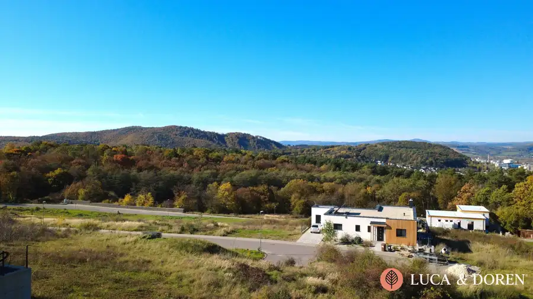
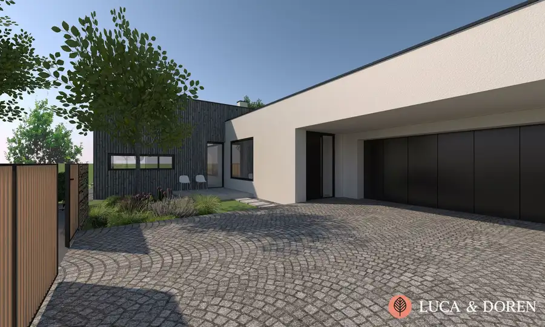
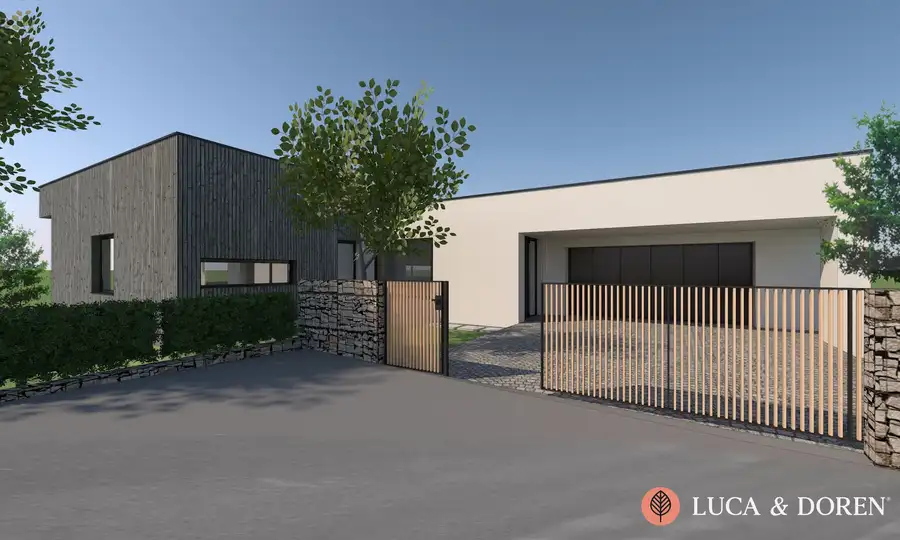
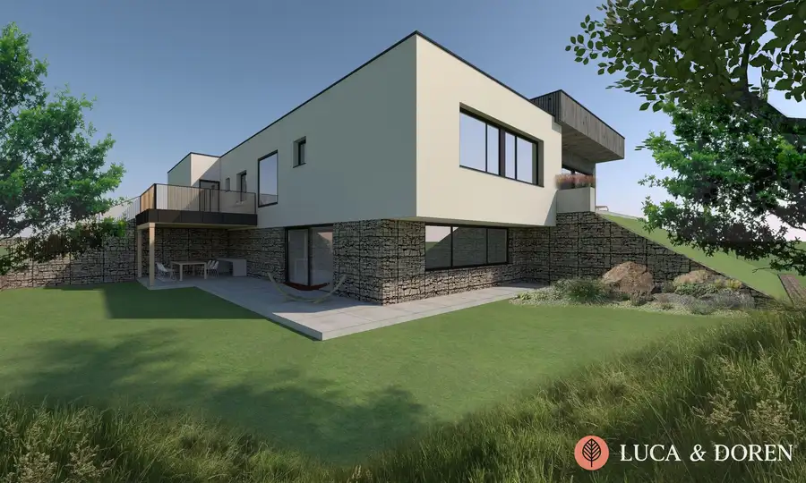
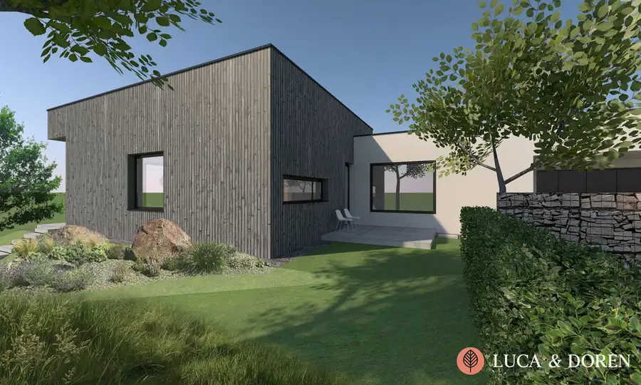
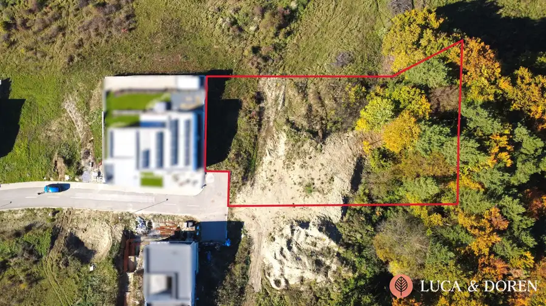
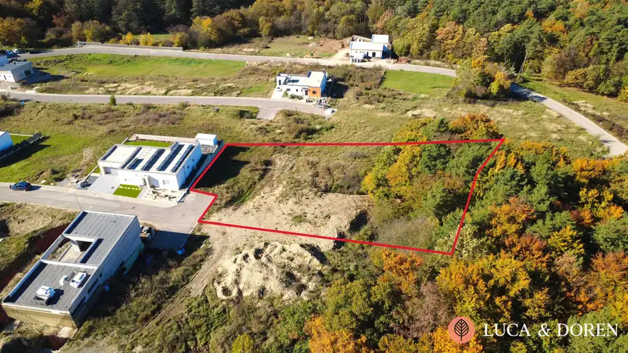
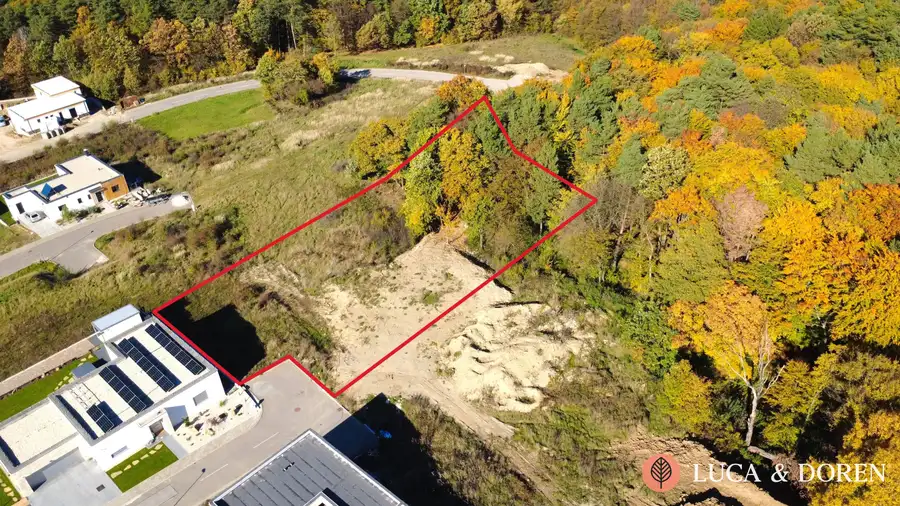
- Plocha2261 m²
O nehnuteľnosti
Luca & Doren Vám ponúka na predaj veľkorysý slnečný stavebný pozemok v luxusnej rezidenčnej štvrti Medové lúky v Novej Dubnici! Ste milovníkom prírody, potrpíte si na súkromí ale zároveň je pre Vás dôležité mať kompletnú občiansku vybavenosť na dosah? Zbystrite pozornosť, táto ponuka je pre Vás!Rozmery pozemku sú približne 35 m x 65 m a celá výmera predstavuje úžasných 2261 m2. Pozemok ponúka dostatok miesta na vybudovanie nádherného prémiového rodinného sídla ale aj priestor na oddych a zábavu. Jedná sa o posledný a najväčší pozemok v slepej ulici, susediaci s lesíkom, nájdete tu kľud, súkromie a možnosť vytvorenia vlastnej oázy pokoja. Prístup na pozemok je po vybudovanej asfaltovej ceste s chodníkom, na hranici pozemku sa nachádzajú všetky inžinierske siete - elektrina, voda, kanalizácia a plyn.Obrovským plusom je platné stavebné povolenie s vyhotoveným projektom priestranného, moderného rodinného domu, vďaka čomu môžete Vaše nové sídlo začať budovať prakticky okamžite. Viacúrovňový, nadčasový dom Vám ponúkne dostatok priestoru pre Vás a Vaše deti s nádhernými panoramatickými výhľadmi na Považie a romantické západy slnka. Lokalita je ako stvorená pre ľudí hľadajúcich pokoj, ticho, bezpečie a blízkosť prírody, ale zároveň chcú mať na dosah kompletnú občiansku vybavenosť. V okolí Medových lúk nájdete viacero turistických chodníkov a trás, ktoré Vás prevedú krásami Strážovských vrchov. Veľmi obľúbenou je najmä trasa z Medových lúk priamo do kúpeľného mesta Trenčianske Teplice. Kompletnú občiansku vybavenosť nájdete v Novej Dubnici (2 km), výborná je aj dostupnosť do Dubnice n.V. (4 km), Trenčína (10 km) a na diaľnicu D1 (6 km). V prípade záujmu o detailnejšie informácie alebo obhliadku nehnuteľnosti nás neváhajte kontaktovať:Ing. Michal MišovecLuca & Doren s. r. o.Tel: +421 904 887 338E-mail: misovec@lucadoren.skUvedená cena je konečná pokiaľ sa zmluvné strany nedohodnú inak a nenavyšuje sa o odmenu sprostredkovateľa, v cene je zahrnuté právne poradenstvo, vyhotovenie kúpnych zmlúv, hypotekárne poradenstvo a uhradenie správneho poplatku za návrh na vklad do katastra nehnuteľností.
Parametre
- Druh
- Pozemok pre rodinné domy
- Dátum zverejnenia
- 26. 05. 2026
- Dĺžka pozemku
- 65
- Elektrina
- Na pozemku - 400 V, Na pozemku - 230 V
- Odpadové vody
- Na pozemku - Kanalizácia
- Plocha pozemku
- 2261 m²
- Plyn
- Pri pozemku
- Pripravenosť k výstavbe
- Vydané stavebné povolenie
- Prístupová komunikácia
- Asfaltová
- Terén pozemku
- Mierne svahovitý
- Typ
- Predaj
- Voda
- Na pozemku - Diaľkový vodovod
- Šírka pozemku
- 35
Kde to je


Mohlo by Vás zaujímať
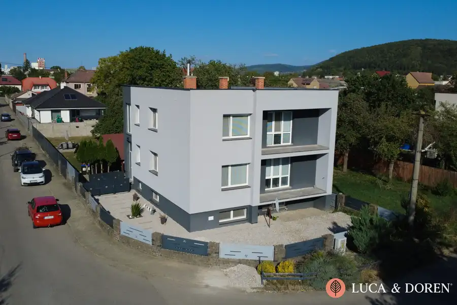
DomNové 369 000 €LUCA & DOREN | Na predaj | Rodinný dom | Trenčianska Teplá | Dve podlažia + pivnica Trenčianska Teplá 300 m²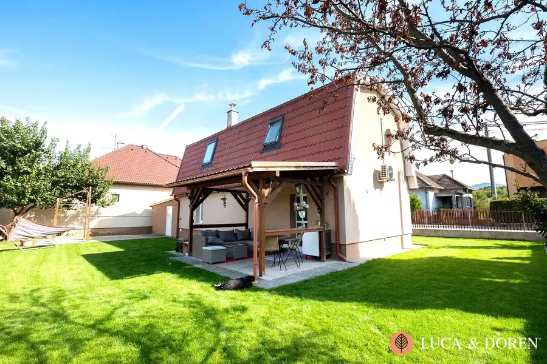
DomNové 254 900 €LUCA & DOREN | Rodinný dom s krásnou záhradou | 7 km od Trenčína | Stačí sa nasťahovať! Trenčianske Stankovce 102 m²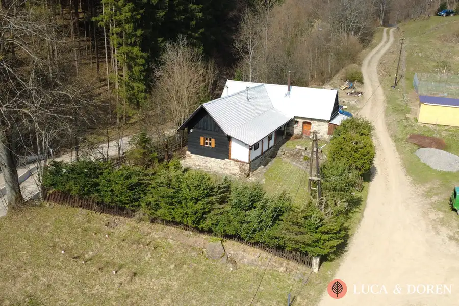
Chata, drevenica, zrubNové Cena na vyžádáníLUCA & DOREN | Na prenájom | Drevenica | Horná Mariková | Charizmatická chata po kompletnej rekonštrukcií Horná Mariková 80 m²